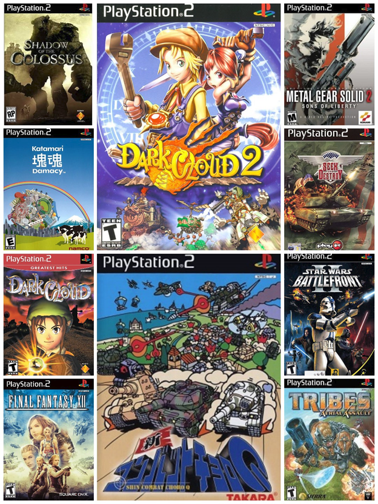
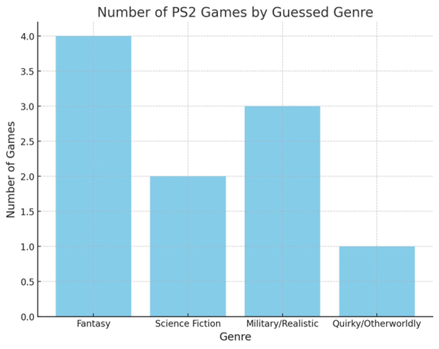
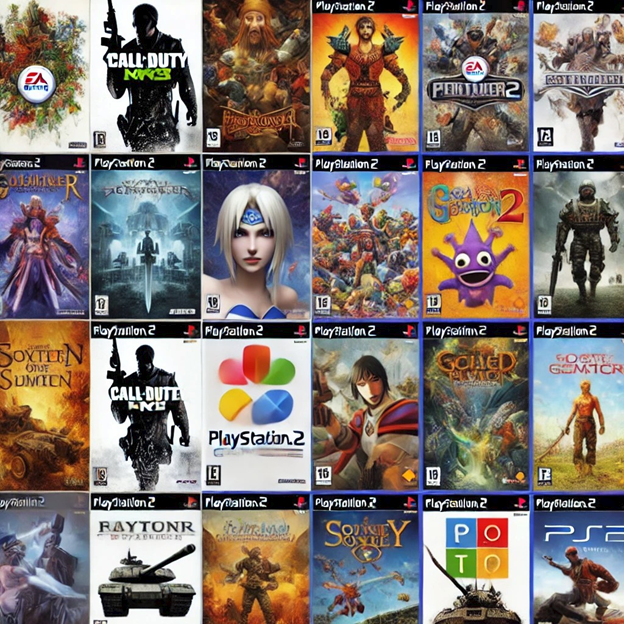

To guide my approach to this week's exercise, I chose PS2 video game covers from some of my favorite titles growing up. There were a total of ten: Shadow of the Colossus, Katamari Damacy, Dark Cloud, Dark Cloud 2, Final Fantasy XII (FFXII), Seek and Destroy, Shin Combat Choro Q (the Japanese release of Seek and Destroy, which I'll explain in a second), Metal Gear Solid 2: Sons of Liberty (MGS2), Star Wars: Battlefront II, and Tribes: Aerial Assault. Game covers spoke to me for this, as it was requested that we select "images [we] find interesting that are related to [our] work in some way . . . [and] assemble these as a collection that speaks to a theme or subject that has significant complexity" (assignment description). I study games, I recently assembled a new set of shelves to store all my retro games on in my living room, and I've been pondering aspects of video game genres for a week or two now. (A project unfortunately likely to die in the heap of others.) So how might covers communicate genre?
These game covers were combined in a collage of ten images via Pixlr, a "free online collage maker." The presentation of a single collage was thanks to the wording of "assembl[ing] these as a collection" gving me curiosity into how ChatGPT might separate them. I'd originally chosen ten because that was the limit I discovered was the maximum for a single upload and I didn't want to risk miscommunication. The collage separated the covers with a thin, white border, hoping to give ChatGPT at least some edge. It appears (with some minor cropping of certain titles thanks to Pixlr and the varying resolutions of the source images) as below:
I decided the cropping would add a little bit of noise to complicate matters, healthy given the white borders are a slight cheat.
Just to get this out of the way: technically speaking, Seek and Destroy and Shin Combat Choro Q are the same game. The covers only differ because the original game was an entry in a series themed around pullback toy cars familiar to a Japanese audience. Other Choro Q games release in other markets include Gadget Racers (Choro Q HG) and Road Trip (Choro Q HG 2). They lost the outward, toy-like Choro Q theming in order to localize them for foreign consumers, despite otherwise featuring the exact same gameplay of having fun with sapient toy cars (or in this case, sapient moddable toy tanks).1 Might ChatGPT treat Shin Combat Choro Q as more related to the equally cartoony Katamari Damacy, and Seek and Destroy as similar to MGS2? I intended to see.
Enter the prompt. "Can you analyze the images in this collage as separate images, separated by white borders? There should be ten of them." It turns out ChatGPT can't separate the images from a collage, but it can identify them as individual elements. It successfully identified all ten titles with a brief, description of each, down to the Japanese name for Dark Cloud 2 randomly. Color me impressed.
The next interesting result was with a network graph of how closely the games seem related based off cover analysis alone. I specified cover analysis alone, because I was afraid of the now-identified games just being searched by other means. The result was the following:
General Grouping:
- Action-Adventure/RPG - These games involve exploration, combat, and narratives. Some involve world-building, and others have tactical depth.
- Shadow of the Colossus (Action-Adventure, exploration)
- Dark Cloud (RPG with city-building)
- Dark Cloud 2 (RPG with city-building)
- Final Fantasy XII (RPG with strategic combat)
- Stealth/Action - These games focus on stealth or precise combat.
- Metal Gear Solid 2 (Stealth-action, tactical)
- Vehicular Combat - These focus on vehicle-based battles and may have arcade-like or realistic mechanics.
- Seek and Destroy (Vehicular combat with tanks)
- Shin Combat Choro Q (Vehicular combat, tanks, more lighthearted)
- Shooter/Multiplayer Battles - These games focus on large-scale multiplayer or single-player combat with a focus on team coordination.
- Star Wars Battlefront (Team-based multiplayer shooter)
- Tribes: Aerial Assault (Multiplayer with jetpack movement)
- Quirky/Experimental - These games stand out for their unique gameplay mechanics or quirky visual style.
- Katamari Damacy (Rolling mechanics, quirky puzzle-action)
- Dark Cloud 2 and Dark Cloud are directly connected as they are from the same series, both RPGs with city-building mechanics.
- Final Fantasy XII shares RPG elements with the Dark Cloud games but is more tactical and combat-heavy, so it's closely linked but slightly apart.
- Metal Gear Solid 2 shares strategic gameplay with Final Fantasy XII, though in the stealth-action genre, so there's a small link here for tactical elements.
- Shadow of the Colossus is an action-adventure but is somewhat isolated from the others due to its unique, minimalist design and boss-focused gameplay.
- Seek and Destroy and Shin Combat Choro Q are closely linked as they both involve vehicle-based combat (tanks specifically).
- Star Wars Battlefront and Tribes: Aerial Assault are connected due to their focus on team-based multiplayer shooting.
- Katamari Damacy is in its own quirky space, but its action nature could be distantly linked to the adventure elements of Shadow of the Colossus (both are unique in their gameplay).
I feel like the links between FFXII and MGS2, as well as Katamari Damacy and Shadow of the Colossus, were a bit forced, but it did link Seek and Destroy and Shin Combat Choro Q as sharing gameplay. (Big surprise.) The other connections felt good, although I was surprised Katamari Damacy, Shin Combat Choro Q, or Dark Cloud 2 weren't linked by cartoonish imagery. Was ChatGPT picking out elements rather than style? Or did it cheat like I was worried about?
I decided to test this out with another graph, this time a bar graph. I asked ChatGPT to now guess the genres of the settings based off the covers alone. I did have to ask it to do a bar graph specifically; it tried with a network graph first. Here's the correct graph:
And the source data:
- Fantasy:
- Shadow of the Colossus
- Dark Cloud
- Dark Cloud 2
- Final Fantasy XII
- Science Fiction:
- Star Wars Battlefront
- Tribes: Aerial Assault
- Military/Realistic:
- Metal Gear Solid 2
- Seek and Destroy
- Shin Combat Choro Q
- Quirky/Otherworldly:
- Katamari Damacy
At first, I got excited, because in a longer summary of the assignments before the breakdown, ChatGPT put Shin Combat Choro Q into a "Military/Realistic (cartoony)" bucket. A little contradictory, but it openly identified the style finally. "The tank warfare shown is stylized and playful . . ." In Katamari Damacy's assignment description, a "strange, colorful style" was also highlighted, and for Dark Cloud 2, "bright colors." But as you can see, it got the assignments otherwise mostly correct. I can't fault it for suggesting Seek and Destroy is "Military/Realistic," given its cover, but I was surprised by Shin Combat Choro Q. Maybe it's still cheating.
The last visual of interest from this exercise was in asking ChatGPT to now generate its own collage:
We see a mutilated PlayStation 2 logo at the top of most covers and some pretty believable entries. A few are reminiscent of games in the collage, and even a few not on it. Except, oh no: obvious Call of Duty covers. Again, riled suspicions. Did tanks and militarism lead to a reliance on something so blatant? Or was there a mixture of actual generation and outside help? I'm going to go with the latter, which leads me into discussing this week's readings.
"The real miracle of reading comprehension . . . is in reading between the lines—connecting concepts, reasoning with ideas and understanding implied messages that aren't specifically outlined in the text" (Harwell). As Mitchell exclaims, "I couldn't have said it better" (224). Her suspicion of AI's ability to match human-like levels of comprehension without access to embodied experience is shared by me. Peering back at the above image, notice the following: a logo reminiscent of Microsoft's, a game that looks like a blurred Fallout entry, an Everquest-looking fantasy woman, two mutilated EA Sports logos, and a cover that reminds me too heavily of an ATV game I've since forgotten. These are all believable because they're not genuine new creations. They're not even remixes all the time. In order to create something fresh, ChatGPT would have to understand something about proper game cover design. It might be able to analyze the covers, but it can't do much more. One might recall the "hid[ing] beind a smokescreen of verbal tricks, playfulness, or canned responses" quoted in the final chapter of this week's reading on Mitchell (Levesque et al. 559; Mitchell 227).
Similar issues emerge in machine translation, as also pointed out by Mitchell. My background in linguistics was mostly historical in nature, but I also dabbled in computational applications due to the more likely employment opportunities associated with them. I've also volunteered (and I must emphasize, volunteered, not employed or contracted) labor toward translating Wikipedia and Wiktionary entries, two version releases of Minecraft, and Twitter, across five languages. (To be fair, one is fictional—Quenya—and the other is an international auxiliary language—Esperanto. But the other three are real, and two are endangered, hence my volunteering.) Some of these opportunities involved various computer-assisted translation tools, such as translation memory. Translation memory is essentially the recommendation of translations of words, phrases, or entire sentences based off the frequency of past translations made by humans. While it was indeed an impressive aid, this was due to its reliance on human input. It was never acceptable to attempt the same work using Google Translate (GT), especially at the time I was doing this work. Some of this was pre-2016, pre-GT's "neural machine translation" as mentioned by Mitchell (202).
Even following this transition, and despite improving every time I revisit it, GT leaves a lot to be desired. Mitchell's friends retranslating the restaurant story back into English from GT's foreign renditions are perfect examples (205-206). GT's mistakes are so effective at obfuscating, it's a viable method of disguising authorship in a practice known as adversarial stylometry. Which brings to note: Mitchell's discussion of adversarial methods in AI thus far have been heavily focused on bad faith usage through the lens of security (228-231). I don't know if she revisits this later in the book, but the concept of adversarial practice attached to AI tools has also spawned an activist culture born in art and privacy. Namely, how to avoid detection by the surveillance apparatus.
Without going into great detail as I'm already at a rather long post once again, Zylinska references surveillance and "data capture" as machine photography several times (113). In calling for an "antiracist" "nontrivial perception machine," I wonder how the use of adversarial methods in evading the current iteration of the capitalist apparatus might play into her philosophy (112). How might this also affect her perception machine, if distrust still exists? I must admit, I struggle to speculate on this, as I struggle a little with her writing thus far. This is far from my expertise, although there are tidbits that have been enlightening.